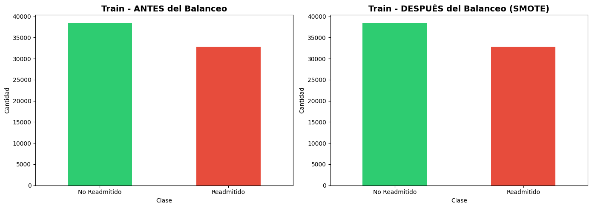

Preprocesamiento de Datos#
Objetivo#
Preparar los datos para el modelado de Machine Learning siguiendo las recomendaciones del EDA:
Eliminar valores faltantes
Codificar variables categóricas
Escalar variables numéricas
Aplicar balanceo de clases
Dividir datos (Train/Val/Test)
Guardar datos procesados
1. Importar Librerías#
# Librerías básicas
import pandas as pd
import numpy as np
import matplotlib.pyplot as plt
import seaborn as sns
import warnings
import pickle
from pathlib import Path
# Preprocesamiento
from sklearn.model_selection import train_test_split
from sklearn.preprocessing import StandardScaler, LabelEncoder, OneHotEncoder
from sklearn.impute import SimpleImputer
from sklearn.compose import ColumnTransformer
from sklearn.pipeline import Pipeline
# Balanceo de clases
from imblearn.over_sampling import SMOTE
from imblearn.under_sampling import RandomUnderSampler
from imblearn.combine import SMOTETomek
warnings.filterwarnings('ignore')
# Configuración de visualización
plt.style.use('default')
sns.set_palette("pastel")
pd.set_option('display.max_columns', None)
print(" Librerías importadas correctamente")
Librerías importadas correctamente
2. Cargar Datos#
# Cargar dataset
df = pd.read_csv('data/raw/diabetic_data.csv')
df = df.replace('?', np.nan) # Reemplazar '?' por NaN
print(f" Dataset cargado: {df.shape[0]:,} filas x {df.shape[1]} columnas")
# Crear variable objetivo
df['target'] = df['readmitted'].isin(['<30', '>30']).astype(int)
df.drop(columns=['readmitted'], inplace=True)
print(f"\n Variable 'target' creada:")
print(df['target'].value_counts())
print(f"\nRatio de desbalance: {(df['target']==0).sum() / (df['target']==1).sum():.2f}:1")
Dataset cargado: 101,766 filas x 50 columnas
Variable 'target' creada:
target
0 54864
1 46902
Name: count, dtype: int64
Ratio de desbalance: 1.17:1
3. Eliminar Columnas Irrelevantes#
# Columnas a eliminar
columns_to_drop = [
'encounter_id', # ID único, no aporta información
'patient_nbr', # ID del paciente, no aporta información
'weight', # >97% de valores faltantes (según EDA)
'payer_code', # Muchos valores faltantes y baja relevancia
'medical_specialty' # Muchas categorías y valores faltantes
]
# Eliminar solo las que existen
columns_to_drop = [col for col in columns_to_drop if col in df.columns]
df = df.drop(columns=columns_to_drop)
print(f" Columnas eliminadas: {columns_to_drop}")
print(f" Dataset después de eliminar: {df.shape[0]:,} filas x {df.shape[1]} columnas")
Columnas eliminadas: ['encounter_id', 'patient_nbr', 'weight', 'payer_code', 'medical_specialty']
Dataset después de eliminar: 101,766 filas x 45 columnas
4. Crear Variables Agrupadas (del EDA)#
# 4.1. Agrupar Admission Type (si no está ya hecho)
if 'admission_type_group' not in df.columns:
admission_type_map = {
1: 'Emergency/Urgent', 2: 'Emergency/Urgent', 7: 'Emergency/Urgent',
3: 'Elective',
4: 'Newborn',
5: np.nan, 6: np.nan, 8: np.nan,
}
df['admission_type_group'] = df['admission_type_id'].map(admission_type_map)
print(" Variable 'admission_type_group' creada")
# 4.2. Agrupar Admission Source (si no está ya hecho)
if 'admission_source_group' not in df.columns:
admission_map = {
7: 'Emergency',
1: 'Referral', 2: 'Referral', 3: 'Referral',
4: 'Transfer', 5: 'Transfer', 6: 'Transfer', 10: 'Transfer',
18: 'Transfer', 19: 'Transfer', 22: 'Transfer', 25: 'Transfer', 26: 'Transfer',
11: 'Birth-Related', 12: 'Birth-Related', 13: 'Birth-Related', 14: 'Birth-Related',
23: 'Birth-Related', 24: 'Birth-Related',
8: 'Other',
9: np.nan, 15: np.nan, 17: np.nan, 20: np.nan, 21: np.nan
}
df['admission_source_group'] = df['admission_source_id'].map(admission_map)
print(" Variable 'admission_source_group' creada")
# Eliminar variables originales que ya fueron agrupadas
df = df.drop(columns=['admission_type_id', 'admission_source_id', 'discharge_disposition_id'], errors='ignore')
print(f"\n Dataset después de agrupación: {df.shape}")
Variable 'admission_type_group' creada
Variable 'admission_source_group' creada
Dataset después de agrupación: (101766, 44)
5. Manejo de Valores Faltantes#
# Analizar valores faltantes
missing_before = df.isnull().sum().sum()
print(f" Valores faltantes antes del tratamiento: {missing_before:,}")
# Identificar columnas con valores faltantes
cols_with_missing = df.columns[df.isnull().any()].tolist()
print(f"\nColumnas con valores faltantes: {len(cols_with_missing)}")
for col in cols_with_missing:
pct = (df[col].isnull().sum() / len(df)) * 100
print(f" - {col}: {pct:.2f}%")
# ESTRATEGIA MEJORADA:
# 1. Eliminar columnas con >80% de valores faltantes
# 2. Imputar valores faltantes en columnas restantes según tipo de variable
print("\n--- PASO 1: Eliminar columnas con >80% de valores faltantes ---")
threshold = 0.80
cols_to_drop = []
for col in df.columns:
missing_pct = df[col].isnull().sum() / len(df)
if missing_pct > threshold:
cols_to_drop.append(col)
print(f" Eliminando '{col}': {missing_pct*100:.2f}% faltantes")
df = df.drop(columns=cols_to_drop)
print(f"\n Columnas eliminadas: {len(cols_to_drop)}")
print(f" Dataset despues: {df.shape}")
# 2. Imputar valores faltantes restantes
print("\n--- PASO 2: Imputar valores faltantes restantes ---")
# Columnas numericas: imputar con la mediana
numeric_cols_with_missing = df.select_dtypes(include=[np.number]).columns[
df.select_dtypes(include=[np.number]).isnull().any()
].tolist()
for col in numeric_cols_with_missing:
median_value = df[col].median()
df[col].fillna(median_value, inplace=True)
print(f" {col}: imputado con mediana = {median_value:.2f}")
# Columnas categoricas: imputar con la moda
categorical_cols_with_missing = df.select_dtypes(include=['object']).columns[
df.select_dtypes(include=['object']).isnull().any()
].tolist()
for col in categorical_cols_with_missing:
mode_value = df[col].mode()[0] if len(df[col].mode()) > 0 else 'Unknown'
df[col].fillna(mode_value, inplace=True)
print(f" {col}: imputado con moda = '{mode_value}'")
# Verificar que no quedan valores faltantes
missing_after = df.isnull().sum().sum()
print(f"\n Valores faltantes despues del tratamiento: {missing_after:,}")
print(f" Dataset final: {df.shape[0]:,} filas x {df.shape[1]} columnas")
print(f" Filas conservadas: {len(df) / 101766 * 100:.2f}% del dataset original")
Valores faltantes antes del tratamiento: 202,706
Columnas con valores faltantes: 8
- race: 2.23%
- diag_1: 0.02%
- diag_2: 0.35%
- diag_3: 1.40%
- max_glu_serum: 94.75%
- A1Cresult: 83.28%
- admission_type_group: 10.22%
- admission_source_group: 6.94%
--- PASO 1: Eliminar columnas con >80% de valores faltantes ---
Eliminando 'max_glu_serum': 94.75% faltantes
Eliminando 'A1Cresult': 83.28% faltantes
Columnas eliminadas: 2
Dataset despues: (101766, 42)
--- PASO 2: Imputar valores faltantes restantes ---
Columnas con valores faltantes: 8
- race: 2.23%
- diag_1: 0.02%
- diag_2: 0.35%
- diag_3: 1.40%
- max_glu_serum: 94.75%
- A1Cresult: 83.28%
- admission_type_group: 10.22%
- admission_source_group: 6.94%
--- PASO 1: Eliminar columnas con >80% de valores faltantes ---
Eliminando 'max_glu_serum': 94.75% faltantes
Eliminando 'A1Cresult': 83.28% faltantes
Columnas eliminadas: 2
Dataset despues: (101766, 42)
--- PASO 2: Imputar valores faltantes restantes ---
race: imputado con moda = 'Caucasian'
diag_1: imputado con moda = '428'
diag_2: imputado con moda = '276'
diag_3: imputado con moda = '250'
admission_type_group: imputado con moda = 'Emergency/Urgent'
admission_source_group: imputado con moda = 'Emergency'
Valores faltantes despues del tratamiento: 0
Dataset final: 101,766 filas x 42 columnas
Filas conservadas: 100.00% del dataset original
race: imputado con moda = 'Caucasian'
diag_1: imputado con moda = '428'
diag_2: imputado con moda = '276'
diag_3: imputado con moda = '250'
admission_type_group: imputado con moda = 'Emergency/Urgent'
admission_source_group: imputado con moda = 'Emergency'
Valores faltantes despues del tratamiento: 0
Dataset final: 101,766 filas x 42 columnas
Filas conservadas: 100.00% del dataset original
6. Identificar Tipos de Variables#
# Identificar variables numéricas y categóricas
numeric_features = df.select_dtypes(include=[np.number]).columns.tolist()
numeric_features.remove('target') # Excluir la variable objetivo
categorical_features = df.select_dtypes(include=['object']).columns.tolist()
print(f" Variables numéricas ({len(numeric_features)}): {numeric_features[:10]}...")
print(f"\n Variables categóricas ({len(categorical_features)}): {categorical_features[:10]}...")
Variables numéricas (8): ['time_in_hospital', 'num_lab_procedures', 'num_procedures', 'num_medications', 'number_outpatient', 'number_emergency', 'number_inpatient', 'number_diagnoses']...
Variables categóricas (33): ['race', 'gender', 'age', 'diag_1', 'diag_2', 'diag_3', 'metformin', 'repaglinide', 'nateglinide', 'chlorpropamide']...
7. Codificación de Variables Categóricas#
# Lista de medicamentos (variables con valores: Up, Down, Steady, No)
drug_columns = ['metformin', 'repaglinide', 'nateglinide', 'chlorpropamide',
'glimepiride', 'acetohexamide', 'glipizide', 'glyburide', 'tolbutamide',
'pioglitazone', 'rosiglitazone', 'acarbose', 'miglitol', 'troglitazone',
'tolazamide', 'examide', 'insulin', 'glyburide-metformin',
'glipizide-metformin', 'glimepiride-pioglitazone', 'metformin-rosiglitazone',
'metformin-pioglitazone']
# Filtrar solo los que existen en el dataframe
drug_columns = [col for col in drug_columns if col in df.columns]
# Codificación ordinal para medicamentos (No < Steady < Down < Up)
drug_mapping = {'No': 0, 'Steady': 1, 'Down': 2, 'Up': 3}
for col in drug_columns:
df[col] = df[col].map(drug_mapping)
print(f" Medicamentos codificados: {len(drug_columns)} variables")
# ESTRATEGIA OPTIMIZADA PARA CODIFICACION
# Reducir dimensionalidad agrupando categorías poco frecuentes
print("\n--- Reduciendo dimensionalidad de variables categóricas ---")
# Variables con diagnósticos (tienen muchas categorías únicas)
diagnosis_cols = ['diag_1', 'diag_2', 'diag_3']
# Agrupar diagnósticos por categoría principal (primeros 3 dígitos)
for col in diagnosis_cols:
if col in df.columns:
# Convertir a string y tomar primeros 3 caracteres
df[col] = df[col].astype(str).str[:3]
# Mantener solo las 20 categorías más frecuentes, resto = 'Other'
top_20 = df[col].value_counts().head(20).index.tolist()
df[col] = df[col].apply(lambda x: x if x in top_20 else 'Other')
print(f" {col}: reducido a {df[col].nunique()} categorías")
# Para otras variables categóricas, mantener solo top N categorías
other_categorical = [col for col in categorical_features
if col not in drug_columns and col not in diagnosis_cols]
for col in other_categorical:
if col in df.columns:
n_unique = df[col].nunique()
if n_unique > 10: # Si tiene más de 10 categorías
# Mantener solo las 10 más frecuentes
top_10 = df[col].value_counts().head(10).index.tolist()
df[col] = df[col].apply(lambda x: x if x in top_10 else 'Other')
print(f" {col}: reducido de {n_unique} a {df[col].nunique()} categorías")
# Variables categóricas a codificar con One-Hot
categorical_to_encode = [col for col in df.select_dtypes(include=['object']).columns
if col not in drug_columns]
print(f"\nCodificando {len(categorical_to_encode)} variables categóricas...")
# One-Hot Encoding (ahora con menos dimensionalidad)
df_encoded = pd.get_dummies(df, columns=categorical_to_encode, drop_first=True, dtype=np.int8)
print(f" Variables categóricas codificadas: {len(categorical_to_encode)}")
print(f" Dataset después de codificación: {df_encoded.shape}")
print(f" Memoria estimada: {df_encoded.memory_usage(deep=True).sum() / 1024 / 1024:.2f} MB")
df = df_encoded.copy()
del df_encoded # Liberar memoria
Medicamentos codificados: 22 variables
--- Reduciendo dimensionalidad de variables categóricas ---
diag_1: reducido a 21 categorías
diag_2: reducido a 21 categorías
diag_3: reducido a 21 categorías
Codificando 11 variables categóricas...
diag_2: reducido a 21 categorías
diag_3: reducido a 21 categorías
Codificando 11 variables categóricas...
Variables categóricas codificadas: 11
Dataset después de codificación: (101766, 114)
Memoria estimada: 32.12 MB
Variables categóricas codificadas: 11
Dataset después de codificación: (101766, 114)
Memoria estimada: 32.12 MB
8. Separar Features y Target#
# Separar X (features) y (target)
X = df.drop(columns=['target'])
y = df['target']
print(f" X (features): {X.shape}")
print(f" y (target): {y.shape}")
print(f"\n Balance de clases en y:")
print(y.value_counts())
print(f"\nRatio: {(y==0).sum() / (y==1).sum():.2f}:1")
X (features): (101766, 113)
y (target): (101766,)
Balance de clases en y:
target
0 54864
1 46902
Name: count, dtype: int64
Ratio: 1.17:1
9. División Train/Val/Test (70/15/15)#
# Primera división: Train (70%) vs Temp (30%)
X_train, X_temp, y_train, y_temp = train_test_split(
X, y, test_size=0.3, random_state=42, stratify=y
)
# Segunda división: Temp -> Val (15%) y Test (15%)
X_val, X_test, y_val, y_test = train_test_split(
X_temp, y_temp, test_size=0.5, random_state=42, stratify=y_temp
)
print(" División de datos:")
print(f" Train: {X_train.shape[0]:,} ({X_train.shape[0]/len(X)*100:.1f}%)")
print(f" Val: {X_val.shape[0]:,} ({X_val.shape[0]/len(X)*100:.1f}%)")
print(f" Test: {X_test.shape[0]:,} ({X_test.shape[0]/len(X)*100:.1f}%)")
print(f"\n Balance de clases preservado:")
print(f" Train: {y_train.value_counts().to_dict()}")
print(f" Val: {y_val.value_counts().to_dict()}")
print(f" Test: {y_test.value_counts().to_dict()}")
División de datos:
Train: 71,236 (70.0%)
Val: 15,265 (15.0%)
Test: 15,265 (15.0%)
Balance de clases preservado:
Train: {0: 38405, 1: 32831}
Val: {0: 8229, 1: 7036}
Test: {0: 8230, 1: 7035}
10. Escalado de Variables Numéricas#
# Identificar columnas numéricas en X_train
numeric_cols = X_train.select_dtypes(include=[np.number]).columns.tolist()
print(f" Variables numéricas a escalar: {len(numeric_cols)}")
# Crear y ajustar el scaler SOLO con datos de train
scaler = StandardScaler()
X_train[numeric_cols] = scaler.fit_transform(X_train[numeric_cols])
X_val[numeric_cols] = scaler.transform(X_val[numeric_cols])
X_test[numeric_cols] = scaler.transform(X_test[numeric_cols])
print("\n Variables escaladas (StandardScaler)")
print(f" Media train: {X_train[numeric_cols].mean().mean():.2e}")
print(f" Std train: {X_train[numeric_cols].std().mean():.2f}")
Variables numéricas a escalar: 113
Variables escaladas (StandardScaler)
Media train: -2.70e-19
Std train: 0.98
Variables escaladas (StandardScaler)
Media train: -2.70e-19
Std train: 0.98
11. Balanceo de Clases (SOLO en Train)#
print(" Aplicando SMOTE para balancear clases en Train...")
print(f"\nAntes del balanceo:")
print(f" Clase 0: {(y_train==0).sum():,}")
print(f" Clase 1: {(y_train==1).sum():,}")
print(f" Ratio: {(y_train==0).sum() / (y_train==1).sum():.2f}:1")
# Determinar la estrategia de balanceo basada en el ratio actual
ratio_actual = (y_train==0).sum() / (y_train==1).sum()
if ratio_actual > 1.5:
# Solo aplicar SMOTE si hay suficiente desbalance
# sampling_strategy='auto' balancea 1:1
smote = SMOTE(random_state=42, sampling_strategy='auto')
X_train_balanced, y_train_balanced = smote.fit_resample(X_train, y_train)
print(f"\nDespués del balanceo:")
print(f" Clase 0: {(y_train_balanced==0).sum():,}")
print(f" Clase 1: {(y_train_balanced==1).sum():,}")
print(f" Ratio: {(y_train_balanced==0).sum() / (y_train_balanced==1).sum():.2f}:1")
print(f"\n Muestras sintéticas generadas: {len(X_train_balanced) - len(X_train):,}")
else:
# Si ya está balanceado, no aplicar SMOTE
print(f"\n Las clases ya están balanceadas (ratio {ratio_actual:.2f}:1)")
print(" No se aplicará SMOTE")
X_train_balanced = X_train
y_train_balanced = y_train
# Guardar versiones balanceadas
X_train_final = X_train_balanced
y_train_final = y_train_balanced
Aplicando SMOTE para balancear clases en Train...
Antes del balanceo:
Clase 0: 38,405
Clase 1: 32,831
Ratio: 1.17:1
Las clases ya están balanceadas (ratio 1.17:1)
No se aplicará SMOTE
12. Visualización del Balance#
# Comparar antes y después del balanceo
fig, axes = plt.subplots(1, 2, figsize=(14, 5))
# Antes
y_train.value_counts().plot(kind='bar', ax=axes[0], color=['#2ecc71', '#e74c3c'])
axes[0].set_title('Train - ANTES del Balanceo', fontsize=14, fontweight='bold')
axes[0].set_xlabel('Clase')
axes[0].set_ylabel('Cantidad')
axes[0].set_xticklabels(['No Readmitido', 'Readmitido'], rotation=0)
# Después
y_train_final.value_counts().plot(kind='bar', ax=axes[1], color=['#2ecc71', '#e74c3c'])
axes[1].set_title('Train - DESPUÉS del Balanceo (SMOTE)', fontsize=14, fontweight='bold')
axes[1].set_xlabel('Clase')
axes[1].set_ylabel('Cantidad')
axes[1].set_xticklabels(['No Readmitido', 'Readmitido'], rotation=0)
plt.tight_layout()
plt.show()
print(" Visualización completada")

Visualización completada
13. Resumen del Preprocesamiento#
print("="*80)
print(" "*20 + "RESUMEN DEL PREPROCESAMIENTO")
print("="*80)
print("\n TRANSFORMACIONES APLICADAS:")
print(" Eliminación de columnas irrelevantes (IDs, weight, etc.)")
print(" Agrupación de categorías (admission_type, admission_source)")
print(" Eliminación de filas con valores faltantes")
print(" Codificación ordinal de medicamentos (No/Steady/Down/Up)")
print(" One-Hot Encoding de variables categóricas")
print(" Escalado de variables numéricas (StandardScaler)")
print(" Balanceo de clases en Train (SMOTE)")
print("\n DIMENSIONES FINALES:")
print(f" Train (balanceado): {X_train_final.shape}")
print(f" Validation: {X_val.shape}")
print(f" Test: {X_test.shape}")
print("\n BALANCE DE CLASES:")
print(f" Train:")
print(f" Clase 0: {(y_train_final==0).sum():,} ({(y_train_final==0).sum()/len(y_train_final)*100:.1f}%)")
print(f" Clase 1: {(y_train_final==1).sum():,} ({(y_train_final==1).sum()/len(y_train_final)*100:.1f}%)")
print(f" Validation:")
print(f" Clase 0: {(y_val==0).sum():,} ({(y_val==0).sum()/len(y_val)*100:.1f}%)")
print(f" Clase 1: {(y_val==1).sum():,} ({(y_val==1).sum()/len(y_val)*100:.1f}%)")
print(f" Test:")
print(f" Clase 0: {(y_test==0).sum():,} ({(y_test==0).sum()/len(y_test)*100:.1f}%)")
print(f" Clase 1: {(y_test==1).sum():,} ({(y_test==1).sum()/len(y_test)*100:.1f}%)")
print("\n" + "="*80)
print(" PREPROCESAMIENTO COMPLETADO")
print("="*80)
================================================================================
RESUMEN DEL PREPROCESAMIENTO
================================================================================
TRANSFORMACIONES APLICADAS:
Eliminación de columnas irrelevantes (IDs, weight, etc.)
Agrupación de categorías (admission_type, admission_source)
Eliminación de filas con valores faltantes
Codificación ordinal de medicamentos (No/Steady/Down/Up)
One-Hot Encoding de variables categóricas
Escalado de variables numéricas (StandardScaler)
Balanceo de clases en Train (SMOTE)
DIMENSIONES FINALES:
Train (balanceado): (71236, 113)
Validation: (15265, 113)
Test: (15265, 113)
BALANCE DE CLASES:
Train:
Clase 0: 38,405 (53.9%)
Clase 1: 32,831 (46.1%)
Validation:
Clase 0: 8,229 (53.9%)
Clase 1: 7,036 (46.1%)
Test:
Clase 0: 8,230 (53.9%)
Clase 1: 7,035 (46.1%)
================================================================================
PREPROCESAMIENTO COMPLETADO
================================================================================
14. Guardar Datos Procesados#
# Crear directorio si no existe
Path('data/processed').mkdir(parents=True, exist_ok=True)
# Guardar datos procesados
print(" Guardando datos procesados...")
X_train_final.to_csv('data/processed/X_train.csv', index=False)
X_val.to_csv('data/processed/X_val.csv', index=False)
X_test.to_csv('data/processed/X_test.csv', index=False)
y_train_final.to_csv('data/processed/y_train.csv', index=False)
y_val.to_csv('data/processed/y_val.csv', index=False)
y_test.to_csv('data/processed/y_test.csv', index=False)
print("\n Datos guardados en 'data/processed/':")
print(" - X_train.csv")
print(" - X_val.csv")
print(" - X_test.csv")
print(" - y_train.csv")
print(" - y_val.csv")
print(" - y_test.csv")
Guardando datos procesados...
Datos guardados en 'data/processed/':
- X_train.csv
- X_val.csv
- X_test.csv
- y_train.csv
- y_val.csv
- y_test.csv
Datos guardados en 'data/processed/':
- X_train.csv
- X_val.csv
- X_test.csv
- y_train.csv
- y_val.csv
- y_test.csv
15. Guardar Transformers (Scaler)#
# Crear directorio para transformers
Path('data/transformers').mkdir(parents=True, exist_ok=True)
# Guardar scaler
with open('data/transformers/scaler.pkl', 'wb') as f:
pickle.dump(scaler, f)
# Guardar información de columnas numéricas
with open('data/transformers/numeric_cols.pkl', 'wb') as f:
pickle.dump(numeric_cols, f)
# Guardar nombres de todas las columnas
with open('data/transformers/feature_names.pkl', 'wb') as f:
pickle.dump(X_train_final.columns.tolist(), f)
print(" Transformers guardados en 'data/transformers/':")
print(" - scaler.pkl")
print(" - numeric_cols.pkl")
print(" - feature_names.pkl")
Transformers guardados en 'data/transformers/':
- scaler.pkl
- numeric_cols.pkl
- feature_names.pkl
16. Verificar Archivos Guardados#
import os
print("📁 Archivos en 'data/processed/':")
for file in os.listdir('data/processed'):
size = os.path.getsize(f'data/processed/{file}') / 1024 / 1024 # MB
print(f" {file:<20} {size:>8.2f} MB")
print("\n📁 Archivos en 'data/transformers/':")
for file in os.listdir('data/transformers'):
size = os.path.getsize(f'data/transformers/{file}') / 1024 # KB
print(f" {file:<20} {size:>8.2f} KB")
print("\n Todos los archivos guardados correctamente")
📁 Archivos en 'data/processed/':
evaluacion_metricas.csv 0.00 MB
optimizacion_resultados.csv 0.00 MB
X_test.csv 33.49 MB
X_train.csv 156.30 MB
X_val.csv 33.50 MB
y_test.csv 0.04 MB
y_train.csv 0.20 MB
y_val.csv 0.04 MB
📁 Archivos en 'data/transformers/':
feature_names.pkl 1.72 KB
numeric_cols.pkl 1.72 KB
scaler.pkl 4.89 KB
Todos los archivos guardados correctamente